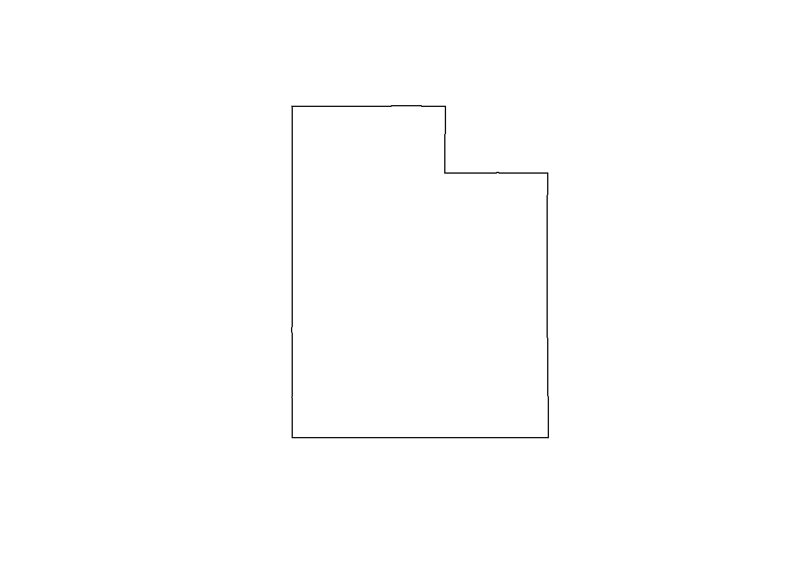

Chapter 6 Where to Obtain Data & Further Resources
6.1 Data Sources
6.1.1 maps package
There is package you can install called maps that contains a lot of global and national features (such as state boundaries, bodies of water, etc). These features don’t contain a lot of data or attributes, so they are more useful for making maps and not so much for spatial analysis. However, I’ve used them to pull state boundaries to get the extents I need for cropping rasters, for example.
The help documentation for the maps package and this website show you how you can access different features from this package. I’ll show you briefly how I use it to pull the state boundary of Utah:
utah <- maps::map("state", plot = F, fill = TRUE) %>%
# turn into sf obj
sf::st_as_sf() %>%
# pull out utah
dplyr::filter(ID == "utah")
utah## Simple feature collection with 1 feature and 1 field
## Geometry type: MULTIPOLYGON
## Dimension: XY
## Bounding box: xmin: -114.0472 ymin: 36.99588 xmax: -109.0396 ymax: 42.00354
## Geodetic CRS: +proj=longlat +ellps=clrk66 +no_defs +type=crs
## ID geom
## utah utah MULTIPOLYGON (((-114.0472 4...
6.1.2 Utah GIS
Many states and cities have GIS data that are publicly available. To find them, typically I google something like “Utah GIS data” or the specific data I’m looking for. Utah helpfully has a website called gis.utah.gov. Some datasets they have that could be useful for ecological research are Geoscience, Water, and Bioscience, just to name a few
6.1.3 Other Environmental Rasters
In this workshop we worked with a DEM (digital elevation model) and snow data. In my own research I work with these data frequently. I also work with RAP (Rangeland Analysis Platform), which offers biomass and vegetation cover, and NDVI (Normalized Difference Vegetation Index), which reports an index of vegetation “green-ness”. Many of these rasters can be downloaded from the website’s user-interface, but they can also be downloaded directly from R!
This can be a bit complicated if you’ve never done it before, but fortunately Brian Smith, a PhD in WILD at USU, has already written a guide!
My research is very temporally-dependent, and many of these rasters are available daily, weekly, or yearly. It can get very tedious to repeat lines and lines of code to download a year’s worth of daily rasters. This is, again, where loops come in handy!
6.2 More Resources
This workshop really just touches the surface on how to work with GIS in R. There are a plethora of resources online to help you enhance what you learned today and help you solve your particular GIS problem. Here are just a few:
6.3 Acknowledgements
The spatial analysis portion of this workshop is partially adapted from Claudia Engel
This website was created with R bookdown